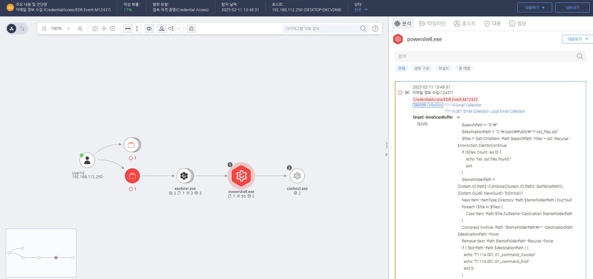

T1114.001.01 Local Email Collection
D3FEND
MITRE ATT&CK 액션을 기준으로 대응 방안을 작성
Detection
파워쉘(Powershell)이 Outlook 데이터 파일(ost)에 접근하는 행위를 확인합니다.
Detection(EDR)

https://172.18.10.125:8903/#/analysis/incident/67aad839002dc6cc00003306
Response
시스템 및 이메일 서버의 로그를 철저히 분석하여, 공격자가 어떤 방법으로 접근하고 데이터를 수집했는지 파악합니다.
Mitigations
1. 이메일 시스템 보안 강화
- 이메일 서버 및 클라이언트에 대한 최신 보안 패치와 업데이트를 적용하여 알려진 취약점을 악용하는 것을 방지합니다.
- 이메일 클라이언트에서 로컬 데이터 저장을 최소화하고, 클라우드 기반 이메일 서비스 사용을 고려하여 서버에서 이메일을 관리하고 로컬 시스템에 저장된 이메일의 민감도를 낮춥니다.
- 이메일 서버에서 강력한 인증(예: 다단계 인증)을 요구하여 외부 공격자가 시스템에 접근하는 것을 방지합니다.
2. 데이터 암호화
- 이메일 데이터와 관련된 모든 정보를 암호화하여, 이메일이 유출되더라도 민감한 내용이 노출되지 않도록 합니다.
- 로컬 이메일 클라이언트에 저장된 이메일 파일을 전체 디스크 암호화(Full Disk Encryption, FDE)하여 외부 공격자가 시스템에 접근하더라도 데이터를 탈취할 수 없도록 합니다.
3. 이메일 액세스 제한
- 이메일 클라이언트 및 이메일 서버에 접근할 수 있는 사용자 및 애플리케이션 권한을 제한합니다.
- 최소 권한 원칙(Least Privilege) 을 적용하여 불필요한 이메일 데이터에 대한 접근을 제한하고, 이메일 클라이언트 설정에서 불필요한 동기화 및 저장 기능을 비활성화합니다.
4. 로그 및 모니터링
- 이메일 액세스 로그를 활성화하여 이메일에 대한 액세스 및 변조를 실시간으로 모니터링합니다.
- SIEM(Security Information and Event Management) 시스템을 사용하여 이메일 수집 활동, 비정상적인 로그인 시도 및 이메일 클라이언트에서의 파일 접근을 탐지하고 경고를 발생시킵니다.
5. 사용자 교육 및 인식 제고
- 사용자 교육을 통해 이메일 보안 및 피싱 공격에 대한 인식을 제고하고, 안전한 이메일 사용 방법을 교육합니다.
- 정기적인 보안 인식 교육을 통해 직원들이 이메일 클라이언트와 관련된 보안 위협을 인식하고 이메일 데이터를 안전하게 관리하도록 유도합니다.
Affected Techniques
Action 실행시 함께 영향을 받는 다른 Techniqes
|D3FEND|
|:-----------:|